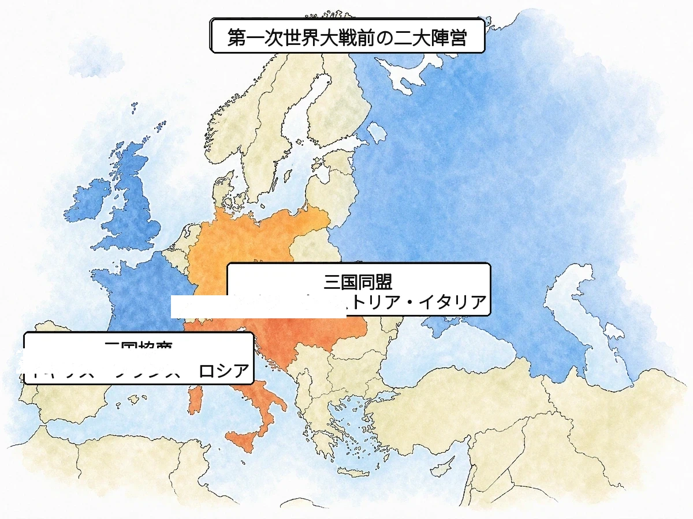

歴史 ⑬ 問題集 Web版
第一次世界大戦と日本
明治末期 〜 大正時代
 いっしょに がんばろう！
いっしょに がんばろう！タブか下のリストから選んで、1問ずつ解いていこう！
要点まとめ → 一問一答 → 4択 → 記述の順で力がつくよ。
要点まとめ → 一問一答 → 4択 → 記述の順で力がつくよ。
年
年表でチェック
（ ）をタップすると答えが出るよ。まずは自分で言ってから確かめよう！
| 年代 | できごと |
|---|---|
| 1882年 | ドイツ・オーストリア・イタリアがを結ぶ |
| 1902年 | 日本がを結ぶ |
| 1914年 | バルカン半島でが起こり、が始まる |
| 1914年 | 日英同盟を理由に日本が参戦し、中国のを占領する |
| 1915年 | 日本が中国の政権にを突きつける |
| 1917年 | ロシアでの指導のもとが起こる |
| 1917年 | が連合国側で参戦する |
| 1918年 | 日本がを始める |
| 1918年 | 富山県からが全国に広がる |
| 1918年 | が降伏し、第一次世界大戦が終わる |
| 1919年 | パリ講和会議でが結ばれる |
| 1919年 | 朝鮮で、中国でが起こる |
| 1920年 | が発足する |
| 1921年 | が開かれる（〜22年、日英同盟が解消される） |
| 1922年 | が成立する |
| 1928年 | スターリンがを始める |
1
第一次世界大戦の勃発
A要点まとめ（ ）をタップして確かめよう
📖 先に参考書で理解する
20世紀初頭のヨーロッパでは、イギリス・フランス・ロシアによると、ドイツ・オーストリア・イタリアによるが対立していた。ただし三国同盟の一員であったイタリアは、開戦後に同盟を離れ、のちに連合国側に立って参戦した。民族・宗教対立が複雑で「ヨーロッパの火薬庫」と呼ばれたでは、1914年6月にオーストリアの皇太子夫妻が暗殺されるが起こり、これをきっかけに第一次世界大戦が始まった。ドイツを中心とすると、三国協商にアメリカや日本が加わったが戦い、西部戦線では深い溝を掘って身を守るが続いた。戦場ではなどの新兵器が使われ、国民・経済・科学技術のすべてを動員するとなった。1917年にが参戦して戦況を決定づけ、1918年にドイツが降伏して大戦は終わった。
B一問一答1 / 12
20世紀初頭のイギリス・フランス・ロシアの協力関係は？
三国協商
20世紀初頭のイギリス・フランス・ロシアの協力関係。ドイツ中心の三国同盟と対立し第一次世界大戦の構図を作った。
B一問一答2 / 12
ドイツ・オーストリア・イタリアの同盟は？
三国同盟
1882年に成立したドイツ・オーストリア・イタリアの同盟。英仏露の三国協商と対立し第一次世界大戦の構図を作った。
B一問一答3 / 12
民族・宗教対立が複雑で「ヨーロッパの火薬庫」と呼ばれた地域は？
バルカン半島
民族・宗教対立が複雑で「ヨーロッパの火薬庫」と呼ばれた地域。1914年のサラエボ事件で第一次世界大戦の発火点となった。
B一問一答4 / 12
1914年、オーストリアの皇太子夫妻が暗殺された事件は？
サラエボ事件
1914年6月、バルカン半島のサラエボでオーストリアの皇太子夫妻がセルビア人青年に暗殺された事件。第一次世界大戦のきっかけ。
B一問一答5 / 12
第一次世界大戦が始まった年は？
1914年
オーストリア皇太子夫妻が暗殺されたサラエボ事件をきっかけに、連合国と同盟国による第一次世界大戦が開戦した年。
B一問一答6 / 12
第一次世界大戦が終結した年は？
1918年
1914年に始まった第一次世界大戦が終わった年。ドイツの敗北・降伏で約4年半の総力戦に終止符が打たれた。
B一問一答7 / 12
国民・経済・科学技術のすべてを動員した戦争のあり方は？
総力戦
国民・経済・科学技術のすべてを動員した戦争の形態。1914年からの第一次世界大戦で本格化し、戦争観を一変させた。
B一問一答8 / 12
第一次世界大戦でドイツと戦った陣営は？
連合国（協商国）
第一次世界大戦でドイツ中心の同盟国と戦った陣営。三国協商のイギリス・フランス・ロシアに、アメリカ・日本などが加わった。
B一問一答9 / 12
第一次世界大戦でドイツを中心とした陣営は？
同盟国
第一次世界大戦でドイツを中心とした陣営。ドイツ・オーストリア・オスマン帝国などで、1918年に連合国に敗北した。
B一問一答10 / 12
第一次世界大戦中、毒性のある気体で敵を攻撃した兵器は？
毒ガス
毒性のある気体で敵を攻撃した兵器。第一次世界大戦の塹壕戦で使われ、戦車・飛行機と並ぶ象徴的な新兵器となった。
B一問一答11 / 12
1917年に連合国側で参戦し、戦況を決定づけた国は？
アメリカ
1917年に連合国側で参戦し、巨大な工業力と兵力で戦況を決定づけ、1918年の連合国勝利に導いた国。
B一問一答12 / 12
西部戦線で繰り広げられた長期化した防御戦の形式は？
塹壕戦
西部戦線で広く行われた、深い溝を掘って身を守る戦い方。戦線が動かない状態が続き、多くの戦死者を出した。
C実戦問題1 / 8 正しいものを選ぼう
第一次世界大戦のきっかけとなった事件は？
C実戦問題2 / 8 正しいものを選ぼう
「ヨーロッパの火薬庫」と呼ばれた地域は？
C実戦問題3 / 8 正しいものを選ぼう
1917年に連合国側で参戦し戦局を変えた国は？
C実戦問題4 / 8 正しいものを選ぼう
第一次世界大戦で初めて大規模に使用された兵器に含まれないのは？
C実戦問題5 / 8 正しいものを選ぼう
国民・経済すべてを動員した戦争のあり方は？
C実戦問題6 / 8 正しいものを選ぼう
サラエボ事件で暗殺されたのはどこの国の皇太子？
C実戦問題7 / 8 正しいものを選ぼう
西部戦線で展開された長期防御戦の形式は？
C実戦問題8 / 8 正しいものを選ぼう
三国同盟の一員だったが、連合国側に転じた国は？
D記述問題1 / 3 文章で説明しよう
バルカン半島が「ヨーロッパの火薬庫」と呼ばれたのはなぜか、説明しなさい。
指定語句 民族宗教
D記述問題2 / 3 文章で説明しよう
第一次世界大戦はなぜ「総力戦」と呼ばれたのか、その戦争のしくみを説明しなさい。
指定語句 科学技術
D記述問題3 / 3 文章で説明しよう
第一次世界大戦のきっかけとなったサラエボ事件とはどのようなできごとか説明しなさい。
指定語句 オーストリア皇太子
E資料問題写真を見て答えよう

(1)地図中で色分けされた二つの陣営のうち、ドイツ・オーストリア・イタリアが結んだ同盟を何というか。
(2)地図中で、イギリス・フランス・ロシアが結んだ、三国同盟に対抗する協力関係を何というか。

2
日本の参戦と二十一か条の要求
A要点まとめ（ ）をタップして確かめよう
📖 先に参考書で理解する
日本は1902年に結んだを根拠に、第一次世界大戦で連合国側に参戦した。1914年、ドイツの租借地であった中国のや、太平洋にあったドイツ領のを占領した。1915年には、大隈内閣が中華民国の政権に対し、山東省のドイツ権益継承などを求めるを突きつけ、中国に強い反日感情を生んだ。国内では、ヨーロッパ諸国の輸出が滞ったことで日本製品の需要が拡大するがおこり、急に大金持ちになったも現れた。1918年、ロシア革命に干渉するためのを見越した米の買い占めから米価が急騰し、が全国に広がって寺内正毅内閣は退陣に追い込まれた。
B一問一答1 / 11
日本が第一次世界大戦で連合国側に参戦した根拠となった同盟は？
日英同盟
1902年に結ばれた日本とイギリスの同盟。日本はこれを根拠に1914年、連合国側で第一次世界大戦に参戦した。
B一問一答2 / 11
日本が第一次世界大戦中に占領した中国のドイツ租借地は？
山東省
中国山東省はドイツが借りて支配していた地域で、青島が中心都市。日本は1914年にここを占領した。
B一問一答3 / 11
第一次世界大戦中に日本が占領した太平洋のドイツ領は？
南洋諸島
赤道以北の太平洋にあったドイツ領を日本が占領。戦後、国際連盟から日本に統治を任された地域となった。
B一問一答4 / 11
1915年、日本が中国（袁世凱政権）に突きつけた要求は？
二十一か条の要求
1915年、大隈内閣が袁世凱政権に突きつけ、山東省のドイツ権益継承などを要求。中国に強い反日感情を生んだ。
B一問一答5 / 11
二十一か条の要求が突きつけられた年は？
1915年
大隈内閣が二十一か条の要求を中国・袁世凱政権に突きつけた年。中国に強い反日感情を生む原因となった。
B一問一答6 / 11
第一次世界大戦中の日本の好景気は？
大戦景気
第一次世界大戦中、欧州諸国の輸出激減で日本製品の需要が拡大した好景気。船成金など新興富裕層も生まれた。
B一問一答7 / 11
大戦景気で急に金持ちになった人々は？
成金
第一次世界大戦の特需で急に巨富を得た人々。海運業の船成金や鉄成金などが代表で、大戦景気を象徴した。
B一問一答8 / 11
1918年、米価高騰に怒った民衆が起こした騒動は？
米騒動
1918年、富山県の主婦らをきっかけに米価高騰への抗議が全国に広がり、寺内正毅内閣は退陣に追い込まれた。
B一問一答9 / 11
米騒動が起きた年は？
1918年
米騒動が全国に広がった年。シベリア出兵を見越した米の買い占めで米価が急騰し、寺内内閣退陣の原因となった。
B一問一答10 / 11
1918〜22年、ロシア革命に干渉するため日本軍が出兵したのは？
シベリア出兵
1918〜22年、ロシア革命に干渉するため日本軍が出兵した戦争。多くの犠牲を出しながら成果なく撤退した。
B一問一答11 / 11
二十一か条の要求を受け入れた当時の中国の権力者は？
袁世凱
辛亥革命後にできた中華民国の最初の大統領。1915年、日本の二十一か条の要求をやむなく受け入れた人物。
C実戦問題1 / 8 正しいものを選ぼう
1918〜22年のロシア革命への日本の干渉戦争は？
C実戦問題2 / 8 正しいものを選ぼう
二十一か条の要求の主な目的の1つは？
C実戦問題3 / 8 正しいものを選ぼう
二十一か条の要求を受け入れた中国の権力者は？
C実戦問題4 / 8 正しいものを選ぼう
大戦景気で急に金持ちになった人々は？
C実戦問題5 / 8 正しいものを選ぼう
米騒動の背景にあった軍事行動は？
C実戦問題6 / 8 正しいものを選ぼう
第一次世界大戦中に日本が占領した中国の地域は？
C実戦問題7 / 8 正しいものを選ぼう
米騒動が起きた年は？
C実戦問題8 / 8 正しいものを選ぼう
第一次世界大戦中に日本が占領した太平洋のドイツ領は？
D記述問題1 / 3 文章で説明しよう
日本が二十一か条の要求を中国に突きつけた目的を説明しなさい。
指定語句 山東省権益
D記述問題2 / 3 文章で説明しよう
1918年に米騒動が全国に広がったのはなぜか、説明しなさい。
指定語句 シベリア出兵
D記述問題3 / 3 文章で説明しよう
第一次世界大戦中に日本で大戦景気が起こったのはなぜか説明しなさい。
指定語句 輸出需要
3
ロシア革命とソ連の成立
A要点まとめ（ ）をタップして確かめよう
📖 先に参考書で理解する
第一次世界大戦が長期化する中、物資・食糧不足で疲弊したロシアでは、1917年に世界初の社会主義革命であるが起こった。労働者・兵士・農民の評議会であるを基盤に、が率いるが政権を握り、のちにロシア共産党となった。日本を含む列強はこの革命をつぶそうと干渉戦争を行い、日本はを行ったが、多くの犠牲を出しただけで成果なく撤退した。1922年、レーニンは世界初の社会主義国家であるを建国した。1924年にレーニンが死去するとが指導者となり、1928年からは国が生産量を決めて工業化を進めるを実施し、独裁的な統治のもとで国力を急成長させた。
B一問一答1 / 10
1917年、ロシアで起きた世界初の社会主義革命は？
ロシア革命
1917年、第一次世界大戦の疲弊と食糧不足を背景に起きた世界初の社会主義革命。レーニンが指導した。
B一問一答2 / 10
ロシア革命が起きた年は？
1917年
第一次世界大戦中、ロシアでレーニン指導のもとボリシェビキが世界初の社会主義政権を樹立した年。
B一問一答3 / 10
ロシア革命を指導した社会主義者は？
レーニン
ロシア革命の指導者。1917年にボリシェビキを率いて世界初の社会主義政権を樹立し、1922年にソ連を建国した。
B一問一答4 / 10
ロシア革命の中で、労働者・兵士・農民の評議会のことを何という？
ソビエト
ロシア語で「会議」の意味。労働者・兵士・農民の代表が集まる組織で、1917年のロシア革命の主体となった。
B一問一答5 / 10
1922年に成立した世界初の社会主義国家は？
ソ連（ソビエト社会主義共和国連邦）
1922年、レーニンが建国した世界初の社会主義国家。冷戦期に米国と二極を構成し、1991年まで存在した。
B一問一答6 / 10
ソ連が成立した年は？
1922年
ソビエト社会主義共和国連邦（ソ連）が成立した年。1917年のロシア革命から5年後にレーニンが建国した。
B一問一答7 / 10
日本がロシア革命に干渉するために出兵した出来事は？
シベリア出兵
1918〜22年、ロシア革命に干渉するため日本軍がシベリアへ出兵した戦争。多くの犠牲を出し成果なく撤退した。
B一問一答8 / 10
レーニンが率いたロシア社会民主労働党の多数派は？
ボリシェビキ
レーニン率いるロシア社会民主労働党の多数派で、1917年のロシア革命を主導。後にロシア共産党となった。
B一問一答9 / 10
スターリンが進めた計画経済政策は？
5か年計画
1928年からスターリンが進めた政策。国が生産量を決め、工場の建設や農地のまとめ上げで国力を急成長させた。
B一問一答10 / 10
レーニンの死後、ソ連の指導者となった人物は？
スターリン
1924年のレーニン死後にソ連の指導者となり、五か年計画で重工業化を進める一方、独裁的な統治を行った人物。
C実戦問題1 / 8 正しいものを選ぼう
ロシア革命をつぶそうと各国が出兵した干渉戦争で、日本が行ったのは？
C実戦問題2 / 8 正しいものを選ぼう
ロシア革命の背景にあった社会問題は？
C実戦問題3 / 8 正しいものを選ぼう
労働者・兵士・農民の評議会を何という？
C実戦問題4 / 8 正しいものを選ぼう
ソ連が成立した年は？
C実戦問題5 / 8 正しいものを選ぼう
レーニンが率いたロシア社会民主労働党の多数派は？
C実戦問題6 / 8 正しいものを選ぼう
レーニンの死後ソ連の指導者となったのは？
C実戦問題7 / 8 正しいものを選ぼう
スターリンが進めた計画経済政策は？
C実戦問題8 / 8 正しいものを選ぼう
ソ連が崩壊した年は？
D記述問題1 / 2 文章で説明しよう
1917年にロシア革命が起こった背景を説明しなさい。
指定語句 食糧疲弊
D記述問題2 / 2 文章で説明しよう
スターリンが進めた五か年計画とは、どのようなしくみの政策か、説明しなさい。
指定語句 工業化
4
戦後秩序とアジアの抵抗
A要点まとめ（ ）をタップして確かめよう
📖 先に参考書で理解する
1919年、第一次世界大戦の戦勝国はを開き、ドイツに巨額の賠償金や軍備制限、領土割譲を課すを結んだ。アメリカ大統領が提唱した、それぞれの民族が自らの国家を持つべきというの原則はアジアの人々を刺激し、朝鮮では日本の植民地支配に抵抗するが、中国では二十一か条の要求やベルサイユ条約に抗議するが起こった。1920年には世界平和を目指すが発足し、日本も常任理事国となった。1921〜22年のでは、列強の海軍主力艦の比率を定める条約が結ばれるとともに日英同盟が解消された。インドではが武力を用いないを掲げてイギリスからの独立を目指した。
B一問一答1 / 12
1919年、第一次世界大戦の講和を話し合った会議は？
パリ講和会議
1919年、第一次世界大戦の戦勝国が集まり、ドイツへの賠償や領土割譲などベルサイユ条約の内容を決めた会議。
B一問一答2 / 12
1919年、第一次世界大戦の講和条約は？
ベルサイユ条約
1919年、パリ講和会議で結ばれた第一次世界大戦の講和条約。ドイツに多額の賠償金・軍備制限・領土割譲を課した。
B一問一答3 / 12
1920年に発足した世界平和を目指す国際機関は？
国際連盟
1920年に発足した世界平和を目指す国際機関。米大統領ウィルソンの提唱で、日本は常任理事国となった。
B一問一答4 / 12
国際連盟を提唱したアメリカ大統領は？
ウィルソン
アメリカ大統領で1918年に十四か条の平和原則を発表。国際連盟の創設や民族自決の理念を提唱した。
B一問一答5 / 12
それぞれの民族が自らの国家を持つべきという原則は？
民族自決
それぞれの民族が自らの国家を持つべきという原則。米大統領ウィルソンが提唱し、アジアの独立運動を刺激した。
B一問一答6 / 12
1921〜22年、海軍軍縮と太平洋・東アジア問題を話し合った国際会議は？
ワシントン会議
1921〜22年に米英日仏伊などが参加した国際会議。日英同盟が解消され、海軍主力艦の比率も決められた。
B一問一答7 / 12
ワシントン会議で結ばれた、列強の主力艦を制限する条約は？
(ワシントン)海軍軍縮条約
1922年、ワシントン会議で結ばれ列強の海軍主力艦を制限。米英5・日3・仏伊1.67の比率となった。
B一問一答8 / 12
1919年、朝鮮で起きた日本支配からの独立運動は？
三・一独立運動
1919年3月1日、ソウルで「独立万歳」が叫ばれ朝鮮全土に広がった、日本の植民地支配からの独立運動。
B一問一答9 / 12
1919年、中国で起きた反日・反帝国主義の運動は？
五・四運動
1919年5月4日、北京の学生から始まった反日・反帝国主義の運動。二十一か条要求やベルサイユ条約への抗議。
B一問一答10 / 12
イギリスから独立を目指したインドの指導者は？
ガンディー
イギリスから独立を目指したインド独立運動の指導者。「非暴力・不服従」を掲げて植民地支配に抵抗した。
B一問一答11 / 12
ガンディーが掲げたイギリスへの抵抗手段は？
非暴力・不服従
インド独立運動の指導者ガンディーが掲げた理念。武力を用いず、納税拒否や英国製品ボイコットで抵抗した。
B一問一答12 / 12
三・一独立運動、五・四運動、ベルサイユ条約の年は？
1919年
ベルサイユ条約調印、朝鮮の三・一独立運動、中国の五・四運動が起きた年で、戦後秩序の出発点となった。
C実戦問題1 / 8 正しいものを選ぼう
1919年の第一次世界大戦の講和条約は？
C実戦問題2 / 8 正しいものを選ぼう
1920年に発足した国際平和機関は？
C実戦問題3 / 8 正しいものを選ぼう
1921〜22年に開催された軍縮会議は？
C実戦問題4 / 8 正しいものを選ぼう
民族自決の理念を提唱したのは？
C実戦問題5 / 8 正しいものを選ぼう
ワシントン会議で解消された日本の同盟は？
C実戦問題6 / 8 正しいものを選ぼう
ガンディーの抵抗手段の理念は？
C実戦問題7 / 8 正しいものを選ぼう
ワシントン会議で決められた米英日の海軍主力艦の比率は？
C実戦問題8 / 8 正しいものを選ぼう
ベルサイユ条約でドイツに課されたものに含まれないのは？
D記述問題1 / 2 文章で説明しよう
パリ講和会議で結ばれたベルサイユ条約は、ドイツにどのようなことを求めたか、説明しなさい。
指定語句 賠償金
D記述問題2 / 2 文章で説明しよう
民族自決の原則は、アジアの人々にどのような影響を与えたか、説明しなさい。
指定語句 三・一独立運動五・四運動
解答
年表でチェック
三国同盟 日英同盟 サラエボ事件 第一次世界大戦 山東省 袁世凱 二十一か条の要求 レーニン ロシア革命 アメリカ シベリア出兵 米騒動 ドイツ ベルサイユ条約 三・一独立運動 五・四運動 国際連盟 ワシントン会議 ソ連 五か年計画
1 第一次世界大戦の勃発
A 要点まとめ① 三国協商 ② 三国同盟 ③ バルカン半島 ④ サラエボ事件 ⑤ 同盟国 ⑥ 連合国 ⑦ 塹壕戦 ⑧ 毒ガス ⑨ 総力戦 ⑩ アメリカ
B 一問一答(1) 三国協商 (2) 三国同盟 (3) バルカン半島 (4) サラエボ事件 (5) 1914年 (6) 1918年 (7) 総力戦 (8) 連合国（協商国） (9) 同盟国 (10) 毒ガス (11) アメリカ (12) 塹壕戦
C 実戦問題(1) ア（サラエボ事件） (2) ウ（バルカン半島） (3) ウ（アメリカ） (4) ア（ジェット戦闘機） (5) ウ（総力戦） (6) エ（オーストリア） (7) イ（塹壕戦） (8) エ（イタリア）
D 記述問題
(1) 民族や宗教の対立が複雑に絡み合い、周辺の大国の利害もからんで、いつ戦争が起きてもおかしくない地域だったから。
(2) 兵士だけでなく国民・経済・科学技術など、国のあらゆる力を戦争のために総動員する戦争だったから。
(3) バルカン半島のサラエボで、オーストリアの皇太子夫妻が暗殺された事件で、これをきっかけに第一次世界大戦が始まった。
E 資料問題(1) 三国同盟 (2) 三国協商
2 日本の参戦と二十一か条の要求
A 要点まとめ① 日英同盟 ② 山東省 ③ 南洋諸島 ④ 袁世凱 ⑤ 二十一か条の要求 ⑥ 大戦景気 ⑦ 成金 ⑧ シベリア出兵 ⑨ 米騒動
B 一問一答(1) 日英同盟 (2) 山東省 (3) 南洋諸島 (4) 二十一か条の要求 (5) 1915年 (6) 大戦景気 (7) 成金 (8) 米騒動 (9) 1918年 (10) シベリア出兵 (11) 袁世凱
C 実戦問題(1) エ（シベリア出兵） (2) エ（山東省のドイツ権益継承） (3) エ（袁世凱） (4) イ（成金） (5) ウ（シベリア出兵） (6) ウ（山東省） (7) ア（1918年） (8) イ（南洋諸島）
D 記述問題
(1) 中国の山東省にあったドイツの権益を日本が引き継ぐことなどを認めさせ、中国での権益拡大をねらったこと。
(2) シベリア出兵を見越した米の買い占めなどで米価が急騰し、生活に困った人々が抗議に立ち上がったから。
(3) ヨーロッパ諸国の輸出が滞ったことで、日本の製品の需要が拡大したから。
3 ロシア革命とソ連の成立
A 要点まとめ① ロシア革命 ② ソビエト ③ レーニン ④ ボリシェビキ ⑤ シベリア出兵 ⑥ ソ連 ⑦ スターリン ⑧ 五か年計画
B 一問一答(1) ロシア革命 (2) 1917年 (3) レーニン (4) ソビエト (5) ソ連（ソビエト社会主義共和国連邦） (6) 1922年 (7) シベリア出兵 (8) ボリシェビキ (9) 5か年計画 (10) スターリン
C 実戦問題(1) ウ（シベリア出兵） (2) イ（戦争による物資不足） (3) エ（ソビエト） (4) エ（1922年） (5) ウ（ボリシェビキ） (6) エ（スターリン） (7) イ（五か年計画） (8) ア（1991年）
D 記述問題
(1) 第一次世界大戦が長期化するなか、物資や食糧の不足で国民が疲弊し、政治への不満が高まっていたから。
(2) 国が生産量を決めて工場の建設や農地のまとめ上げを進める政策で、独裁的な統治のもと工業化を急速に進めた。
4 戦後秩序とアジアの抵抗
A 要点まとめ① パリ講和会議 ② ベルサイユ条約 ③ ウィルソン ④ 民族自決 ⑤ 三・一独立運動 ⑥ 五・四運動 ⑦ 国際連盟 ⑧ ワシントン会議 ⑨ ガンディー ⑩ 非暴力・不服従
B 一問一答(1) パリ講和会議 (2) ベルサイユ条約 (3) 国際連盟 (4) ウィルソン (5) 民族自決 (6) ワシントン会議 (7) (ワシントン)海軍軍縮条約 (8) 三・一独立運動 (9) 五・四運動 (10) ガンディー (11) 非暴力・不服従 (12) 1919年
C 実戦問題(1) ウ（ベルサイユ条約） (2) ア（国際連盟） (3) エ（ワシントン会議） (4) イ（ウィルソン） (5) エ（日英同盟） (6) ウ（非暴力抵抗） (7) ウ（5:5:3） (8) イ（ドイツ皇帝の処刑）
D 記述問題
(1) ドイツに多額の賠償金の支払いや軍備の制限、領土の割譲を課し、大戦の責任を負わせる内容だった。
(2) 民族自決の考えに刺激され、朝鮮の三・一独立運動や中国の五・四運動など、独立や反帝国主義を求める動きが広がった。